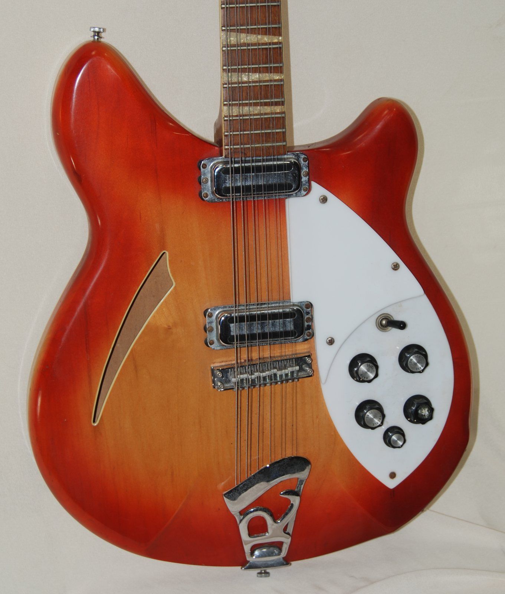

1991 年 9 月 24 日
美国的唱片店里多了一张封面是蓝色泳池的专辑。唱片公司对它的期望并不高，首批只压了几万张。乐队来自西雅图附近的小城阿伯丁，三个人，之前只在一家叫 Sub Pop 的独立小厂牌出过一张唱片。
几个星期后，打头的单曲 MV 开始在 MTV 的深夜节目里播放，然后挪到了白天，然后整天在播。年轻人在学校走廊里互相问：“你看过那个在体育馆里的视频吗？”
1992 年 1 月，这张叫《Nevermind》的专辑登上美国专辑榜第一名，把 Michael Jackson 的《Dangerous》挤了下来。乐队叫 Nirvana。那个一直站在主流旁边、被叫作“另类”的世界，一夜之间被推到了舞台中央。这一章讲的就是这个世界：它从哪里来，长什么样，以及被推到中央之后发生了什么。
从朋克那章开始，我们一直在讲“反对”：朋克反对臃肿的摇滚，金属反对温和。但朋克的火在 1978 年前后就烧完了，那些被它点燃的年轻人接下来做什么？
他们大多没有回到大唱片公司，也没有去追求体育场和排行榜。他们组乐队、开小厂牌、在大学电台当 DJ、开着破面包车在全国的小酒吧巡演，用复印的杂志互相推荐唱片。十几年里，这个网络慢慢长成了一个平行的音乐世界。英国人叫它 indie（独立），美国人叫它 alternative（另类）或 college rock（大学摇滚）。
01 · what什么是另类
前面几章讲的类型，大多可以用声音来定义：布鲁斯有十二小节，金属有失真和闷音，朋克有三个和弦和快速度。“另类”很难这样定义，因为它首先是一个相对的位置：和当时的主流不一样的那些音乐。
1980 年代美国的主流是什么？是 MTV 上光鲜亮丽的流行歌、电子鼓和合成器，是长发、紧身裤、在体育场里演出的“华丽金属”（glam metal）。和这些相比，下面这些都算“另类”：
- 发行渠道不同：唱片由独立小厂牌发行，不靠大公司的宣传和电台打榜
- 传播渠道不同：靠大学电台、地下杂志、唱片店店员的推荐和巡演口碑
- 声音更“粗”：录音预算低，常常故意不打磨；嗓音不一定漂亮，演奏不追求炫技
- 态度更内向：歌里写的更多是困惑、疏离、讽刺和日常，而不是派对和英雄
- 反对明星制：乐手看上去和台下观众差不多，穿旧 T 恤和法兰绒衬衫
所以“另类”底下的声音五花八门：有冷峻的后朋克，有明亮的“叮当”吉他，有震耳的噪音墙，也有西雅图的重型垃圾摇滚。它们的共同点更多在于出身，而不在于听起来像什么。
先是电台杂音，然后调到一个“主流台”：闪亮的合成器、带巨大回声的电子鼓，非常 1980 年代。再一转，调到“大学电台”：录音粗糙、吉他干净、鼓声不加修饰。两段都是本书原创的模仿，不是任何真实的歌。
02 · post-punk朋克之后：后朋克
朋克证明了“谁都可以组乐队”。但很快就有人觉得，三个和弦加上快速度也会变成一种新的公式。1978 年前后到 1980 年代初，英国出现了一批乐队，他们保留了朋克的自己动手和粗粝，却开始在声音上做实验。这股潮流后来被称为后朋克（post-punk）。
后朋克最有代表性的乐队之一是曼彻斯特的 Joy Division。他们的声音冷、空、阴郁，像一座空荡荡的工业城市。后朋克在编曲上有一个很有意思的“换位”：
- 贝斯弹旋律：贝斯手常常用拨片在高把位弹出清晰的旋律线，成了歌里最好记的部分
- 吉他退到后面：吉他不再负责扎实的和弦，而是用合唱、镶边等效果器做出稀疏、飘忽的“氛围”
- 鼓变得机械：鼓点简单、规整，有时干脆用电子鼓机，像工厂的节拍
- 人声低沉：歌手的嗓音常常低而平，不太“唱”，更像在念
贝斯在高把位弹旋律，鼓像机器一样规整。
吉他只弹几个带合唱效果的高音，像远处的灯。
再加上一个低沉的“人声”和合成器长音。
后朋克的影响极其深远。The Cure 把它变得更浪漫，后来的“哥特摇滚”从这里分出；同一时期的“新浪潮”（new wave）把它和合成器、流行旋律结合，反而上了排行榜。另类音乐里那种冷峻、内省的气质，大多可以追溯到这几年。
03 · college大学电台、小厂牌与“叮当”吉他
在 1980 年代的美国，商业电台播什么由排行榜和广告决定；而几百所大学里有学生自己办的电台，DJ 想放什么就放什么。这些大学电台成了另类音乐最重要的传声筒。一张小厂牌的唱片，可能先在几个大学城被播放，再随着乐队的巡演一站一站传开。
这个网络背后是一批独立厂牌：洛杉矶的 SST、华盛顿特区的 Dischord、明尼阿波利斯的 Twin/Tone、西雅图的 Sub Pop……它们往往只有几个人，靠邮购和巡演卖唱片。乐队开着面包车，在全国的小酒吧、地下室、大学礼堂之间巡演，睡在朋友的地板上。这套“自己动手”的巡演网络，直接继承自朋克那章讲的硬核朋克。
这条路上最成功的乐队，是来自佐治亚州小城雅典（Athens）的 R.E.M.。他们的声音和硬核朋克完全不同：吉他明亮、清脆，一串串分解和弦像风铃一样，人们形容它为 jangle，大致可以译成“叮当声”。这种声音可以追溯到 1960 年代 The Byrds 和披头士用过的十二弦电吉他：每个音都闪着一层亮光。
干净的电吉他弹同一串分解和弦。
每个音都多了一根高八度的弦，再加一点合唱效果。
注意两种声音的“亮度”和“宽度”：十二弦每根弦之间有一点点音准和时间上的差别，叠在一起就有一种闪烁感。

04 · loud-quiet安静、爆发、安静
如果说另类摇滚有什么最容易辨认的“结构”，那就是大小声对比（loud-quiet-loud）：主歌非常安静，贝斯和一把干净的吉他，歌手几乎在低语；到了副歌，失真踏板一踩，鼓和吉他像墙一样倒下来，歌手开始吼叫；然后再落回安静。
这种写法在波士顿乐队 Pixies 那里被用到了极致。Kurt Cobain 后来说过，写《Smells Like Teen Spirit》时，他其实是想模仿 Pixies 的这种大小声对比。安静是为了让爆发更响：同样的音量，如果前面是安静的，听起来就会更猛烈。
干净吉他和贝斯，一直这样弹下去。
失真吉他和重鼓，从头砸到尾。
同样的和弦，交替出现。
比较第二个和第三个：哪一个的“爆发”听起来更猛？其实它们的音量完全一样。
05 · noise噪音、怪调弦与“盯鞋”
另类音乐里还有一条更激进的路：把吉他当作发声的机器，而不是弹和弦的乐器。
Sonic Youth：重新调弦
纽约乐队 Sonic Youth 的两位吉他手几乎不用标准调弦。他们把弦调成各种奇怪的组合，常常让好几根弦是同一个音或相差八度，有时还在弦下面塞进螺丝刀、鼓棒。结果是：一些和弦会“嗡嗡”地共鸣，像钟声；另一些则刺耳、不和谐。他们的歌里，旋律优美的段落和大段噪音、反馈常常交替出现。
“盯鞋”：音墙
1980 年代末到 1990 年代初的英国，一批乐队演出时几乎不动，低着头盯着脚下一排效果器踏板，于是被媒体戏称为 shoegaze（盯鞋）。代表是爱尔兰和英国成员组成的 My Bloody Valentine。他们的声音是一堵厚厚的、模糊的音墙：很多层失真吉他叠在一起，加上大量混响，人声被埋在里面，像隔着毛玻璃听歌。
他们的吉他手有一个招牌技巧：一边扫弦，一边不停地轻轻压动吉他上的颤音摇杆，让整片和弦的音高像水波一样微微摇晃。这种声音被叫作 glide guitar（滑动吉他）。
空弦扫一下：一个普通的和弦。
几根弦同音，扫起来像钟一样嗡嗡共鸣。
层层失真、混响和摇晃的音高。
06 · grunge西雅图的雨：垃圾摇滚
1980 年代的西雅图远离洛杉矶和纽约这些音乐中心，常年阴雨，房租便宜。这里的年轻乐手同时听两种看似矛盾的东西：硬核朋克，和 1970 年代的 Black Sabbath、Led Zeppelin。于是他们弹出了一种又脏又重的声音：朋克的态度和粗糙，金属的沉重和慢速 riff。媒体和 Sub Pop 厂牌把它叫作 grunge，这个词在英语里的意思是“污垢”，中文常译作“垃圾摇滚”。
垃圾摇滚的几个特点：
- 失真很“脏”：不是金属那种整齐、紧凑的失真，而是松散、毛糙、带一点破音的
- 调低的弦：很多乐队用 Drop D 或更低的调弦（金属那章讲过），让 riff 更沉
- 中速：比激流金属慢得多，常常是拖着走的中速，像在泥里跋涉
- 大小声对比：上一节讲的结构在这里成了标配
- 反时尚的样子：法兰绒格子衬衫、破牛仔裤、旧毛衣，这原本只是西北部工人阶级年轻人的日常穿着
Nirvana 之后，西雅图的 Pearl Jam、Soundgarden、Alice in Chains 也相继成为全国性的乐队。1991 年起由乐手 Perry Farrell 发起的巡回音乐节 Lollapalooza，把这些另类乐队带进了全美各地的大场地。
快、直、开放的强力和弦。
极慢、极重，每个音拖得很长。
中速、脏的失真，安静的主歌接爆发的副歌。
这个故事有一个沉重的结尾。突如其来的名声让很多另类乐手非常不适应，他们原本就是为了反对明星制才玩音乐的。1994 年 4 月，Kurt Cobain 去世，年仅 27 岁。很多人把这一天看作垃圾摇滚时代的结束。
07 · britain英国：Britpop、Radiohead 与后摇
当美国的电台被垃圾摇滚占领时，英国的年轻乐队选择了一个相反的方向：不要美国式的阴郁和失真，回到 1960 年代英国自己的传统，披头士、The Kinks、The Who 那种明亮的旋律、合唱和带一点讽刺的英国日常。这股潮流被称为 Britpop。
Britpop 最出名的一幕是 1995 年 8 月的“Britpop 之战”：伦敦乐队 Blur 和曼彻斯特乐队 Oasis 在同一天发行新单曲，英国媒体把它炒作成南方中产对北方工人阶级的对决，连晚间新闻都在报道谁卖得多。那一周 Blur 赢了单曲榜，但 Oasis 的专辑后来卖得更多。
大调、明亮的和弦进行，钢琴和铃鼓，像 1960 年代。
电子鼓和分解和弦，每小节五拍，有点“跛”。
没有人声，一层层叠加，慢慢涨到爆发。
Radiohead：走出摇滚
来自牛津的 Radiohead 起初被当作又一支吉他乐队。1997 年的专辑《OK Computer》里，他们开始用复杂的歌曲结构、变换的拍号和冷冰冰的电子声音，写现代生活里的疏离和焦虑；2000 年的《Kid A》几乎放弃了吉他，转向电子乐和氛围音乐。很多人认为，这两张专辑把“另类”这个词从一种摇滚风格，变回了它本来的意思：做和别人不一样的东西。
不规则的拍号是另类音乐里常见的“小怪癖”。我们听到的流行歌几乎都是每小节 4 拍；改成 5 拍或 7 拍，听起来就像走路时总有一步迈得不一样。
后摇：没有歌手的摇滚
1990 年代中期，一批乐队用摇滚乐队的乐器（吉他、贝斯、鼓）演奏没有人声、不按“主歌—副歌”结构写的长曲子，乐评人称之为后摇（post-rock）。苏格兰的 Mogwai、加拿大的 Godspeed You! Black Emperor、美国得州的 Explosions in the Sky 都是代表。后摇最典型的写法是渐强：从一把吉他的几个音开始，乐器一件件加入，用几分钟时间慢慢涨到一个巨大的爆发。
08 · garage2000 年代：车库复兴与网络
世纪之交，“另类”已经成了美国电台的一个固定频道，很多“另类”乐队听起来和主流摇滚没什么两样。这时，一批新乐队回头找到了更早的东西：1960 年代的车库摇滚，和 1970 年代纽约的朋克、后朋克。
- The Strokes（纽约）：2001 年的首张专辑短小、干脆、录音故意有点“扁”，两把吉他像齿轮一样咬在一起
- The White Stripes（底特律）：只有两个人，一把吉他一套鼓，没有贝斯。吉他手用八度效果器让吉他同时发出低八度的声音，补上贝斯的位置
- Arctic Monkeys（英国谢菲尔德）：在发唱片之前，歌就在网上被乐迷传开了。2006 年的首张专辑成了当时英国销售最快的首张专辑
Arctic Monkeys 的故事预示了另一件事：“独立”的传播渠道正从大学电台变成互联网。音乐博客、乐评网站、MySpace，接替了当年的复印杂志和大学电台，“indie”渐渐从一种发行方式变成了一种声音风格的名字。
一把失真吉他，一套鼓，低音区是空的。
吉他同时发出低八度的音，听起来像多了一把贝斯。
09 · paradox当另类变成主流
“另类”这个词有一个天生的悖论：它的意思是“主流之外”，可一旦它成功了，它就成了主流。1991 年之后，唱片公司派人去西雅图签下所有穿法兰绒衬衫的乐队，商场里卖起了“垃圾摇滚风格”的时装，电台设立了“另类摇滚”频道。原来站在旁边的东西，变成了一个市场分类。
另类音乐圈对此一直很矛盾。“出卖”（selling out）是乐迷最常用的指责之一：签了大公司、上了电视、歌被用在广告里，都可能被说成背叛了独立精神。但也有人认为，独立从来不是一个关于“卖得少”的承诺，而是关于谁来决定音乐的样子。
到了流媒体时代，这个问题又换了一个面目。今天任何人都可以在卧室里用一台电脑录完一张专辑，直接上传到网上；“独立”几乎成了默认状态。有一种被称为 bedroom pop（卧室流行）的风格，干脆把这种条件变成了美学：模糊的合唱效果吉他、简单的鼓机、像老磁带一样微微走音的声音。
注意整段声音在轻微地“摇晃”：这是在模仿老磁带转速不稳带来的音高波动（wow & flutter）。原本是录音设备的缺陷，现在被当作一种温暖、怀旧的质感，专门用效果器做出来。
10 · china中文世界的另类与独立
中文世界的“另类”，大致也经历了“地下—爆发—再回到独立”的过程。
- 魔岩三杰与红磡：1990 年代初，台湾滚石旗下的魔岩文化签下了北京的窦唯、张楚、何勇，被称为“魔岩三杰”。1994 年 12 月 17 日，他们和唐朝乐队在香港红磡体育馆举办“中国摇滚乐势力”演唱会，被很多人看作中国摇滚的一个高峰。窦唯离开黑豹后的《黑梦》，已经带着明显的后朋克和实验色彩；张楚的歌则安静、内省，几乎没有摇滚的“架势”
- 北京的独立乐队：1990 年代后期起，北京出现了大量地下乐队和小厂牌，比如新裤子、痛仰、后来的刺猬；金属那章提到的迷笛音乐节，也是他们的重要舞台
- 万能青年旅店：来自河北石家庄，2010 年发行首张专辑。他们的歌里有长段落的器乐、小号，以及对一座工业城市的记录，被很多人看作中文独立摇滚最重要的专辑之一
- 台湾的独立乐团：草东没有派对 2016 年发行首张专辑《丑奴儿》，第二年在金曲奖上拿下最佳新人、最佳乐团和年度歌曲；落日飞车、deca joins 等乐团则走向了更松弛、更接近卧室流行的声音
和英美一样，中文独立音乐的传播渠道也在变：从打口带和地下演出，到豆瓣音乐人、音乐节，再到短视频平台。
一段原创的器乐片段：干净的分解和弦吉他铺底，鼓和贝斯慢慢进来，然后一支合成的小号吹出一条五声音阶的旋律。小号不是摇滚乐队的常规乐器，在独立乐队里却常常出现，带来一种开阔、怀旧的感觉。
11 · listen听：本章十二首曲目
按时间顺序排成一盘合辑磁带。A 面是 1980 年代的地下和 1991 年的爆发，B 面是之后的分岔。每张卡片都提供 YouTube、网易云和 QQ 音乐的搜索链接。
12 · practice练 · 术语表
练习 1：谁在弹旋律？
听《Love Will Tear Us Apart》的前奏。最好记的那条旋律是哪件乐器弹的？对照图 2。
练习 2：画出响度地形
听《Where Is My Mind?》和《Smells Like Teen Spirit》，在纸上画一条线：安静时画低，爆发时画高。和图 4 比一比。
练习 3：找“叮当”
听《Radio Free Europe》，再听 Lab 03 的十二弦。吉他的声音哪里像？
练习 4：数拍子
听《Paranoid Android》，找出歌曲里拍子“不对劲”的段落。试着用“1、2、3，1、2”的方式数一数。
练习 5：地下与地上
对比张楚的《姐姐》和草东没有派对的《山海》，相隔二十多年。它们“另类”在哪里？是声音，还是态度？
术语表
- 另类
- alternative，相对于主流的音乐位置，美国 1980 年代起用来称呼独立和大学电台的音乐
- 独立
- indie，原指由独立厂牌发行，后来也指一种声音风格
- 后朋克
- 1978 年前后起，在朋克基础上做声音实验的音乐
- 新浪潮
- 与后朋克同时期、结合合成器和流行旋律的音乐
- 大学电台
- 美国大学里学生自办的电台，另类音乐的重要传播渠道
- 独立厂牌
- 不隶属于大唱片集团的小型唱片公司
- jangle
- 明亮、清脆、像风铃一样的分解和弦吉他声音
- 十二弦吉他
- 六组弦、每组两根的吉他，低音组配高八度弦
- 大小声对比
- loud-quiet-loud，安静的主歌和爆发的副歌交替
- 另类调弦
- 不按 E A D G B E 的标准调弦法
- 盯鞋
- shoegaze，以厚重模糊的吉他音墙为特点的风格
- 音墙
- 多层吉他和混响叠成的厚重整体声音
- 垃圾摇滚
- grunge，西雅图兴起的、融合朋克与重金属的另类摇滚
- Britpop
- 1990 年代中期回归英国传统旋律的摇滚潮流
- 拍号
- 每小节有几拍、以什么音符为一拍，如 4/4、5/4
- 后摇
- 用摇滚乐器演奏、通常无人声、讲究渐强的器乐音乐
- 车库摇滚
- 1960 年代业余乐队式的粗糙摇滚，2000 年代初复兴
- 八度效果器
- 让乐器同时发出高或低八度音的效果器
- 出卖
- selling out，乐迷指责乐队为商业成功放弃原则
- 卧室流行
- 在家用设备上录制、带磁带质感的独立流行
- 魔岩三杰
- 1990 年代魔岩文化旗下的窦唯、张楚、何勇